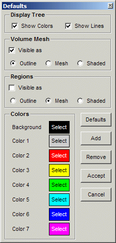

|  | This panel sets up the initial behavior and colors to be used when
reading in a CGNS file.
The first section, Display Tree, controls the display of connecting lines and color boxes within the Display Tree. The next section, Volume Mesh, indicates how the boundaries of the volume mesh for each zone are to be treated. The default is to show them as outlines. The initialization for the surface regions are set in the Regions section, and the default for these is to display them as mesh lines but with the visibility initially off. The Colors section defines the colors to be used initially for
the zones. The colors may be changed by clicking on the Select button.
New colors may be added with the Add button, and colors removed
with the Remove button. The Default button resets everything
to the default values.
|